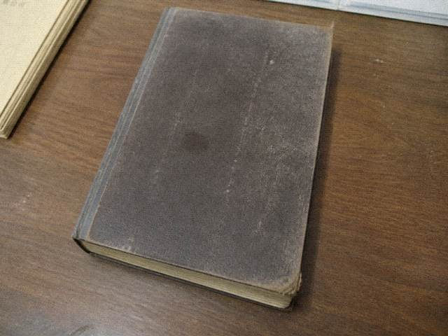

今晚交割

四张单。齐了才能交。交一张，其余作废。
灰的也能点，点了会告诉你还差哪本。

四张单。齐了才能交。交一张，其余作废。
灰的也能点，点了会告诉你还差哪本。
抄件
今晚交割。窗口夹子上那张说明。夹子是铁的，夹过的纸边都有锈。锈不管。字如下。
四张单。齐了才能交。交一张，其余作废。作废的意思是今晚不能改选第二张。不能改选不是系统坏了，是班里只认一次交割。灰的也能点，点了会告诉你还差哪本。差应工簿去抄件。差边注去扫描。差香火去文化馆。差白戏附则去剧团那一页。夹子左边是申诉退票，走订单。走订单钱可能退，行不一定涂。夹子上边是划名，要三本到齐，到齐了程石划。夹子右边是按票入场，入场就去东七排，去了可能被叫。夹子下边是改挂白戏，改挂夜场那行作废，作废了开锣仍可能缺人，缺人是班里的事。四张单不要一起交。一起交窗口不收。不收就退回你手里。手里那几张纸不是纪念。纪念没有。有的是今晚这一个选择。选择完回执只此一条。一条就一条。别来补第二张。第二张没有。夹子今晚不加油印。油印坏了。坏了手写。手写一样算。铁夹子锈的那边夹过香火账复印件，复印件边也锈了，锈了乔干不认。不认就另印，另印走文化馆，文化馆五点下班。下班了今晚可能印不出来。印不出来你就明天。明天这场过了。过了还交割，交的是名，不是戏。按钮灰也能点，点了只报还差哪本。报完不代填。翻完回来再点。交完夹子合上。今晚不二次开。